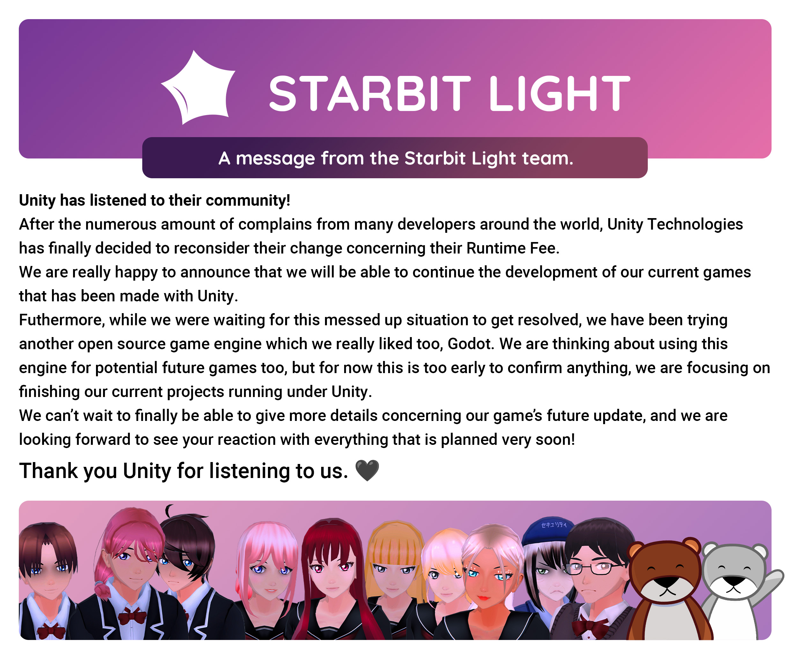

September 24th 2023
Unity has listened to their community!
After the numerous amount of complains from many developers around the world, Unity Technologies has finally decided to reconsider their change concerning their Runtime Fee.
We are really happy to announce that we will be able to continue the development of our current games that has been made with Unity.
Furthermore, while we were waiting for this messed up situation to get resolved, we have been trying another open source game engine which we really liked too, Godot. We are thinking about using this engine for potential future games too, but for now this is too early to confirm anything, we are focusing on finishing our current projects running under Unity.
We can't wait to finally be able to give more details concerning our game's future update, and we are looking forward to see your reaction with everything that is planned very soon!
Thank you Unity for listening to us. 🖤
Raphael
September 13th 2023
Hello! Here's a little alarming update about the latest changes concerning Unity's new Runtime Fee.
In short, what's this Runtime Fee?
We suggest you to take a look at Unity's official blog post about it:
https://blog.unity.com/news/plan-pricing-and-packaging-updates
In short, at a certain threshold of installation for our games, we would have to pay a fee to Unity.
This is really concerning for the future of Suicide For Him
We are really stressed about this whole situation, just like a lot of other game developers and game studios. If Unity keeps this change up, then we might probably just temporarily take down Suicide For Him from Steam until we completely port it over to another game engine and re-release it again.
What you can do to help us, and all the other game developers across the world
Not a single Unity game developer is okay with this change. This is completely going to mess up all the games projects around. Please, share the message around, tag Unity on socials to express your dissatisfaction with this new Runtime Fee. With a little bit of change, maybe, just maybe, Unity will revert this decision.
We have until January 1st 2024 to make them change their mind.
And in the case they won't be changing any of this, we are really sorry in advance to have to delay the game's update even more.
Raphael
July 07th 2023
A little message about the Starbit Light team, Suicide For Him, and all the other side projects.
Hello everyone! For those who don't know me, I'm Raphael, founder of the Starbit Light team.
I wanted to clarify a few things and give you some news concerning Starbit Light, our projects, and the future.
What's going on with Suicide For Him?
The majority of you are here for this game. We know how hyped you are for knowing when the future update is coming up with the promised next acts since November 2021.
First of all, we are sorry for making you wait for so long! I feel like releasing the game in Early Access and wanting to release frequent updates to add more acts was a real mistake, especially for a game project that is being worked on free-time.
Suicide For Him is mainly supposed to be a story based game, where you follow the protagonist's life, complete various missions, travel through dreams and nightmares, and make strong decisions.
When I started the development of SFH, I went in a completely blurry way and didn't know what the game was actually ending up being. It was late after, when I welcomed new amazing and talented members to the Starbit Light team, that I was really able to brainstorm something concrete and have a clear vision of what the game is going to be.
Since the Early Access release on Steam in November 2021, many things have changed. To start, we decided to revisit the overall story, but also the style of the game. We decided to go for a “less dark and edgy” style, and we even have chosen a brand new name for the game. Yes, Suicide For Him is getting rebranded so it can finally be played by a larger range of player.
We can't wait to announce to you the brand new identity the game will get, and we also can't wait to show you the impressive work we did over the last months on the story of the game. There's so much new stuff, new characters, new twists, new environments, and new music too! I know I'm increasing your hype even more, but you gotta be patient to see what we're cooking.
Why does it take so long?
I founded Starbit Light to be a small team of people who are passionate into game development. We are working together on projects, but not all the time because we do this in our free time.
Starbit Light isn't a video game company, meaning that the projects we're working on are not our job and we are not earning anything from it for now. This is the way we're working for now, and this is not subject to change anytime soon for now.
What about the other projects?
Other projects (like Yuki's Kitchen, or some other side projects) are not even properly announced. For now, these are just side projects, and they are not our priority. We are trying to focus as much as possible on Suicide For Him so we can get it done as fast as possible for you, but at the same time we don't want to rush it and make a complete mess out of it that would disappoint the players.
Now, when will we get a release date?
The answer is the same as it's been since months: we don't know.
As said above, we don't want to rush anything out, we are making sure everything is perfect so everyone can have an amazing experience while playing. Concerning Suicide For Him, no more updates will release for now until the full and complete story is done. I can't give you too much info about it, but I can just tell you that globally it's mostly just a matter of writing up the rest of the story, putting it in game, polishing a few things and preparing the rebrand everywhere. It's unknown how much time it will take, and we don't want to estimate anything too.
We will announce proper release dates for any project whenever we're ready and feel like this is the right time to do so.
Conclusion
I hope this message will reassure some of you who were doubting that Starbit Light was dead. Thank you for your time and your patience.
Raphael